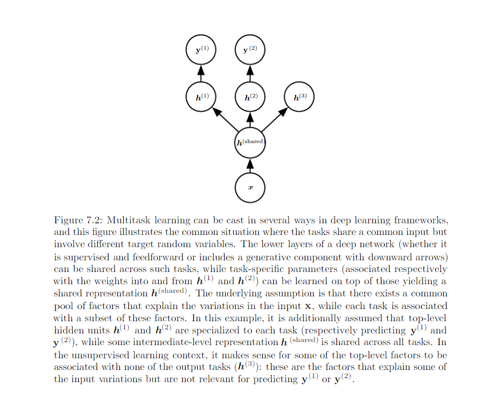
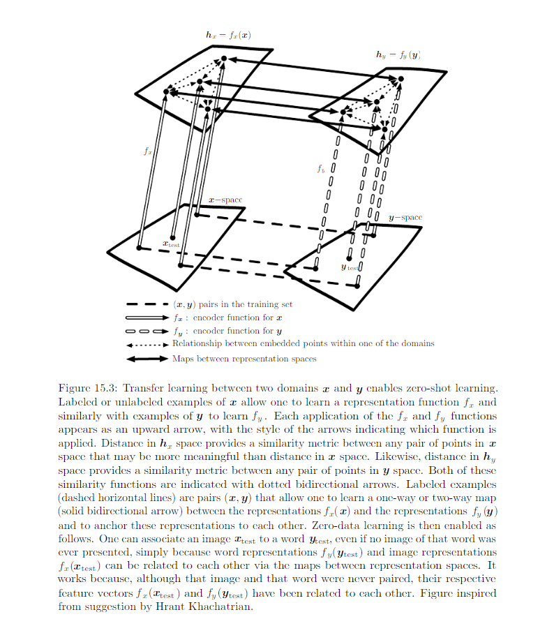

15.2 Transfer Learning and Domain Adaptation¶
Transfer learning and domain adaptation refer to situation where what has been learned in one setting (e.g. distribution P1) is exploited to improve generalization in another settings (say, distribution P2).
Transfer learning¶
The learner must perform two or more different tasks, we assume that many of the factors that explain the variations in P1 are relavant to the variations that need to be captured for learning P2.
Transfer learning, multitask learning and domain adptation can be achieved via representation learning when there exist features that are useful for different settings or tasks, corresponding to underlying factors that appear in more than one setting. Review:
Two extreme form of transfer learning:
(1) One-shot learning¶
Only one example of transfer task is given for one-shot learning. It is possible because the representation learns cleanly seperate the underlying classes during first stage. During the transfer learning stage, only one labeled example is needed to infer the label of many possible test examples that all cluster around the same point in representation space.
(2) Zero-shot learning¶
No labeled examples are given at all. It is only possible because additional information has been exploited during training. Three random variable
- traditional input x
- traditional output y
- additional random varible describing the task T
The model is trained estimate P(y|x, T). E.g. Even we may not have labeled exmaples translating word A in language X to word B in language Y, we can generalize and guess a translation for word A. Illustrated below:
Shared semantics of the output¶

Domain Adaptation¶
The task (and the optimal input-to-output mapping) remains the same between each setting, but the input distribution is slightly different. e.g. A sentiment predictor trained on customer review of media content, such as book, video is later used to analyze comments about comsumer eletronics such as TVs and smartphones. Simple unsupervised pretraining (with DAE) has been found to be very successful for sentiment analysis with domain adaptation.
In all these cases, the objective is to take advantage of data from the first setting to extract info that maybe useful when learning or even when directly making predictions in the second setting. Core idea of representation learning: same representation maybe useful in both settings